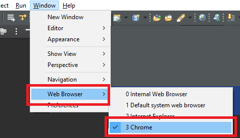

[Java] 37.イクリプス(eclipse)でトムキャット(tomcat)を設定する方法
こんにちは。明月です。
この投稿はイクリプス(eclipse)でトムキャット(tomcat)を設定する方法に関する説明です。
ウェブサービスを開発するためにはWAS(ウェブアプリケーションサーバ)のトムキャットを先にインストールしなければならないです。その後に開発ツール(IDE-eclipse)にトムキャットを設定して開発環境を構成しなければならないです。
まず、トムキャットをインストールするためにホームページに接続してトムキャットをダウンロードしましょう。
link - https://tomcat.apache.org/download-80.cgi

トムキャットをインストールするためにはzipファイルをダウンロードして圧縮を解凍する方法があるし、window installerを利用してインストールする方法があります。
window installerを利用してインストールする場合はインストーラでサービスを登録させてくれるしウィンドウが起動する時に自動にサーバ起動をする設定までやってくれます。しかしこの方法は開発が終わった後にWebアプリケーション(Web application)を登録する時にはよいですが、我々は開発環境を構築することなのでインストーラより圧縮ファイルをダウンロードして開発環境(eclipse)に設定しましょう。
それならzipファイルをダウンロードしましょう。
圧縮ファイルをダウンロードしたら適当なところに解凍してもよいですが、プログラム管理の便利性のため、eclipseの下のフォルダやプロジェクトフォルダに解凍しましょう。
私の場合はeclipseがインストールしたところに解凍しました。
トムキャットをインストールはこれだけでよいです。
そうすると開発のために開発ツール(eclipse)にトムキャットを登録しましょう。
まず、イクリプス(eclipse)を実行して新しいプロジェクトを生成しましょう。
eclipseのプロジェクトウィザードでServerを選択しましょう。

ダウンロードしたトムキャットバージョンを合わせてサーバタイプを設定しましょう。
私の場合は8.5.xバージョンをダウンロードしたのでTomcat v8.5 Serverを選択しました。

次はトムキャットがインストールパス(解凍されたフォルダパス)を選択して設定しなければならないです。
私の場合はeclipseの下のフォルダに解凍したのでそのパスを選択しました。

設定が終わるとプロジェクトエクスプローラーにサーバのトムキャットの設定ファイルが表示されると完了です。
トムキャット設定をするためにeclipseの下のServerタブを選択して当該なサーバを選択します。
それなら概要(Overview)が出ますが、私の場合はPorts設定とタイムアウト設定だけ設定しました。

タイムアウト設定はコンパイルした後で起動する時にサーバが止まっている時間設定ですが、それがタイムオバーになるとサーバが落ちます。
PCの性能が悪いならタイムアウト設定をしなければならないです。しなかったら起動する時に45秒以上になるとトムキャットサーバが落ちます。
ポートの場合はPCに他のサーバのポートを重ねている場合に起動エラーに発生します。イクリプス(eclipse)のないで使うトムキャットは他のサーバと重ねないために設定するほうがよいです。
それなら簡単にウェブプロジェクトを生成しましょう。
WebのDynamic Web Projectを選択しましょう。
そしてプロジェクト名を設定しましょう。
トムキャットとモジュールバージョンがしっかり設定されているかを確認してFinishボタンを押下しましょう。
それならプロジェクトが生成されます。
WebContentフォルダでindex.jspファイルを生成しましょう。
<%@ page language="java" contentType="text/html; charset=UTF-8" pageEncoding="UTF-8"%>
<!DOCTYPE html>
<html>
<head>
<meta charset="UTF-8">
<title>Insert title here</title>
</head>
<body>
hello world
</body>
</html>
その後、eclipseで実行ブラウザを設定しましょう。

私の場合はChrome browserを選択しました。
そしてプロジェクトに右クリックすればContext menuが表示されます。そしてDebug asのDebug on Serverを選択します。
そして設定したトムキャットを選択してFinishを押下しましょう。
そうすると始めはコンソールタブにログが出力することを確認できますが、数秒後でChromeブラウザにサーバが起動されたことを確認できます。

index.jspファイルが表示されることを確認できました。
ここまでイクリプス(eclipse)でトムキャット(tomcat)を設定する方法に関する説明でした。
ご不明なところや間違いところがあればコメントしてください。
- [Java] 44. Web Spring frameworkのviewで使うプログラム言語(JSTL) - XML2019/10/09 07:34:08
- [Java] 43. Web Spring frameworkのviewで使うプログラム言語(JSTL) - 関数、データベース2019/10/08 07:43:33
- [Java] 42. Web Spring frameworkのviewで使うプログラム言語(JSTL) - コア―、フォーマット2019/10/07 07:38:13
- [Java] 41. Web Spring webframeworkのControllerからajaxの要請する時、jsonタイプのデータを返却する方法2019/10/04 19:24:43
- [Java] 40. Web Spring frameworkでControllerを扱う方法2019/10/03 20:02:06
- [Java] 39. Spring Web Frameworkを利用してウェブサービスプロジェクトを作成する方法2019/10/02 21:00:22
- [Java] 38. Javaでウェブサービスプロジェクト(JSP Servlet)を作成する方法2019/10/01 21:48:08
- [Java] 37.イクリプス(eclipse)でトムキャット(tomcat)を設定する方法2019/09/30 22:19:34
- [Java] 36.コーディングする時、よく使うコーディングパターンとステップ数を減らす方法2019/09/27 20:39:09
- [Java] 35. コーディング規約設定(Google Standard coding style)2019/09/26 21:31:25
- [Java] 34. WindowでMariaDBをインストールする方法2019/09/25 19:58:30
- [Java] 33. オープンライブラリを参照する方法(eclipseからmavenを連結)2019/09/24 19:35:54
- [Java] 32. Reflection機能を使う方法(Annotation編)2019/09/24 00:19:25
- [Java] 31. Reflection機能を使う方法(Variable編)2019/09/20 22:34:40
- [Java] 30. Reflection機能を使う方法(Method編)2019/09/19 20:20:10
- [Design pattern] 1-1. シングルトンパターン(Singleton pattern)2021/06/09 19:40:05
- [Design Pattern] デザインパターンの紹介2021/06/08 20:42:36
- [Tools] Dbeaver(無料Sql queryブラウザツール)2021/04/28 18:26:49
- [Bootstrap] HTMLデザインのフレームワークのBootstrap紹介2020/07/30 19:06:36
- [Python] メール(smtplib)を送信する方法2020/07/27 18:38:43
- [Python] HttpConnection(requestsモジュール)でウェブサーバーで接続する方法2020/07/20 14:41:51
- [Python] Excel(openpyxl)を扱う方法2020/07/16 16:40:31
- [Python] ファイル圧縮、解凍(zipfile)する方法2020/07/14 19:14:22
- [Python] Apache cgiでPythonを使う方法2020/07/09 19:58:19
- [Python] Web serverを起動する方法(http.server)2020/07/09 00:13:13
- [Python] WebSocketを使う方法2020/07/07 17:29:18
- [Python] PythonとJavaのソケット通信する方法2020/07/03 18:35:50
- [Python] PythonとC#のソケット通信2020/07/01 19:28:22
- [Python] INI(環境設定ファイル)を扱う方法2020/06/30 18:26:01
- [Python] Jsonを扱う方法2020/06/29 19:18:15